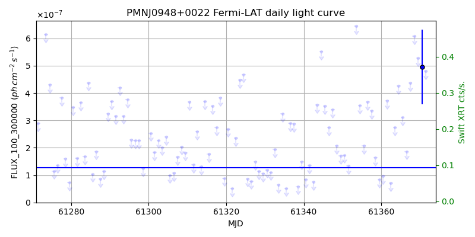
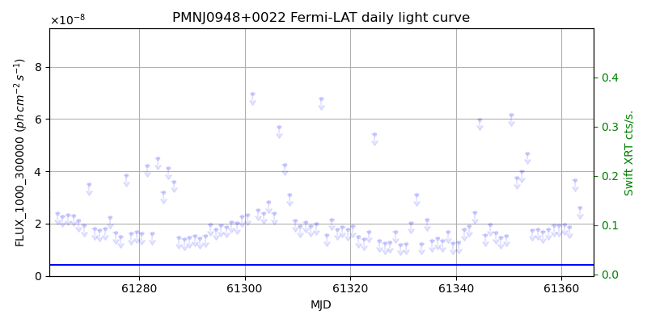
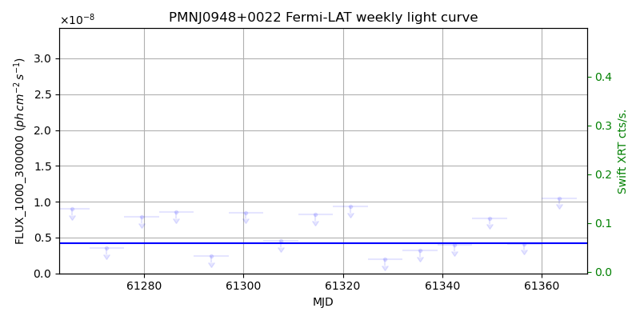

LAT Lightcurve site: https://fermi.gsfc.nasa.gov/ssc/data/access/lat/msl_lc/source/PMN_J0948p0022
Swift site: https://www.swift.psu.edu/monitoring/source.php?source=PMNJ0948+0022
NED: Query
Time of last update of this page: UT: 2026-11-20 16:21 (MJD: 61364.681)
| Property | Value |
|---|---|
| R.A. | 9:48:57.36 |
| Dec. | 0:22:26.4 |
| z | 0.584 |
| 3FGL SpectrumType | LogParabola |
| 3FGL PL Index | |
| 3FGL Flux_100_300000 | 1.27e-07 1 / (s cm2) |
| 3FGL Flux_1000_300000 | 4.19e-09 1 / (s cm2) |
| 3FGL Flux >200 GeV | 3.67e-14 1 / (s cm2) |
| 3FGL Extrap. Crab >200 GeV | 0.00 |
| 3FGL Flux After EBL Absorption >200GeV | 5.90e-15 1 / (s cm2) |
| 3FGL EBL Crab Fraction >200GeV | 0.00 |

| MJD | dMJD | Flux | dFlux | Frac3FGL | FracCrab>200GeV | EBLFracCrab>200GeV |
|---|---|---|---|---|---|---|
| 61359.50 | 0.50 | 8.31e-08 | 0.00e+00 | 0.00 | 0.00 | 0.00 |
| 61360.50 | 0.50 | 9.72e-08 | 0.00e+00 | 0.00 | 0.00 | 0.00 |
| 61361.50 | 0.50 | 3.72e-07 | 0.00e+00 | 0.00 | 0.00 | 0.00 |
| 61362.50 | 0.50 | 7.02e-08 | 0.00e+00 | 0.00 | 0.00 | 0.00 |
| 61363.50 | 0.50 | 2.75e-07 | 0.00e+00 | 0.00 | 0.00 | 0.00 |
| MJD | dMJD | Flux | dFlux | Frac3FGL | FracCrab>200GeV | EBLFracCrab>200GeV |
|---|---|---|---|---|---|---|
| 61328.50 | 3.50 | 7.59e-08 | 0.00e+00 | 0.00 | 0.00 | 0.00 |
| 61335.50 | 3.50 | 5.06e-08 | 0.00e+00 | 0.00 | 0.00 | 0.00 |
| 61342.50 | 3.50 | 1.17e-07 | 0.00e+00 | 0.00 | 0.00 | 0.00 |
| 61349.50 | 3.50 | 1.09e-07 | 0.00e+00 | 0.00 | 0.00 | 0.00 |
| 61356.50 | 3.50 | 1.70e-07 | 0.00e+00 | 0.00 | 0.00 | 0.00 |

| MJD | dMJD | Flux | dFlux | Frac3FGL | FracCrab>200GeV | EBLFracCrab>200GeV |
|---|---|---|---|---|---|---|
| 61359.50 | 0.50 | 1.94e-08 | 0.00e+00 | 0.00 | 0.00 | 0.00 |
| 61360.50 | 0.50 | 1.98e-08 | 0.00e+00 | 0.00 | 0.00 | 0.00 |
| 61361.50 | 0.50 | 1.87e-08 | 0.00e+00 | 0.00 | 0.00 | 0.00 |
| 61362.50 | 0.50 | 3.66e-08 | 0.00e+00 | 0.00 | 0.00 | 0.00 |
| 61363.50 | 0.50 | 2.61e-08 | 0.00e+00 | 0.00 | 0.00 | 0.00 |

| MJD | dMJD | Flux | dFlux | Frac3FGL | FracCrab>200GeV | EBLFracCrab>200GeV |
|---|---|---|---|---|---|---|
| 61328.50 | 3.50 | 1.94e-09 | 0.00e+00 | 0.00 | 0.00 | 0.00 |
| 61335.50 | 3.50 | 3.20e-09 | 0.00e+00 | 0.00 | 0.00 | 0.00 |
| 61342.50 | 3.50 | 3.99e-09 | 0.00e+00 | 0.00 | 0.00 | 0.00 |
| 61349.50 | 3.50 | 7.72e-09 | 0.00e+00 | 0.00 | 0.00 | 0.00 |
| 61356.50 | 3.50 | 4.13e-09 | 0.00e+00 | 0.00 | 0.00 | 0.00 |
--------------------------------------------------------- Using user-supplied coords: 9:48:57.36 0:22:26.4 2000 --------------------------------------------------------- FLWO UT night of: 2026-11-21 Local Sid. @ Midnight: 03:37 Sunset (-15.0) (local, UT): 18:33 01:33 Sunrise (-15.0) (local, UT): 05:47 12:47 Moonrise (local, UT): Moonset (local, UT): 03:40 10:40 Moon phase: 0.85 --------------------------------------------------------- AzTime LSID UT Obj_el Obj_az Mn_el Mn_az Sep. --------------------------------------------------------- 18:33 22:09 01:33 -57.8 8.8 47.9 117.4 137.8 19:03 22:39 02:03 -56.0 22.2 53.3 125.0 137.6 19:33 23:09 02:33 -53.0 34.1 58.2 134.7 137.5 20:03 23:39 03:03 -49.0 44.2 62.3 146.9 137.3 20:33 00:09 03:33 -44.2 52.7 65.1 162.1 137.1 21:03 00:39 04:03 -38.9 59.8 66.3 179.7 137.0 21:33 01:09 04:33 -33.2 65.8 65.4 197.5 136.8 22:03 01:39 05:03 -27.2 71.2 62.9 213.2 136.6 22:33 02:09 05:33 -21.1 75.9 59.0 225.9 136.4 23:03 02:39 06:03 -14.8 80.3 54.2 235.9 136.3 23:33 03:09 06:33 -8.5 84.4 48.9 243.9 136.1 00:03 03:39 07:03 -1.2 88.4 43.2 250.4 135.9 00:33 04:10 07:33 4.5 92.4 37.3 255.9 135.7 01:03 04:40 08:03 10.8 96.4 31.2 260.7 135.5 01:33 05:10 08:33 17.1 100.6 25.1 265.1 135.3 02:03 05:40 09:03 23.3 105.1 19.0 269.2 135.0 02:33 06:10 09:33 29.4 110.0 12.9 273.0 134.8 03:03 06:40 10:03 35.3 115.5 6.8 276.9 134.5 03:33 07:10 10:33 40.9 121.8 1.0 280.7 134.2 04:03 07:40 11:03 46.1 129.3 -4.9 284.7 133.9 04:33 08:10 11:33 50.7 138.3 -11.1 288.8 133.6 05:03 08:40 12:03 54.5 149.0 -16.8 293.2 133.3 05:33 09:10 12:33 57.2 161.6 -22.3 298.1 133.0 05:47 09:25 12:47 58.0 168.1 -24.8 300.5 132.8 --------------------------------------------------------- Dark hours >55 deg.: 0.67 srcstart (UT): 2026-11-21 12:06 srcend (UT): 2026-11-21 12:46